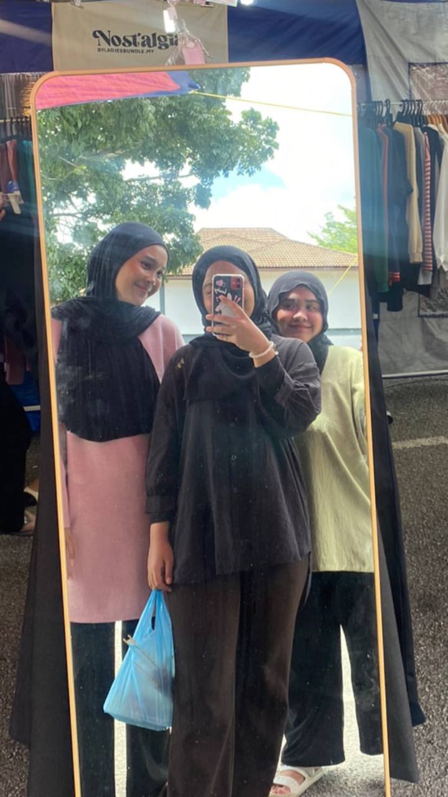

YES! I'm a student at UiTM Kedah. Let's explore this page together!
One of the greatest gifts in life is having a true friend by your side through the ups and downs. I am so grateful to have that in Aween and Enol. Our friendship has been a source of joy and comfort, even when life gets tough. No matter what challenges we've faced, we've always been there for each other, offering a listening ear, a shoulder to cry on, and a helping hand. I am truly blessed to have Aween and Enol as my friends. Their commitment and support have made a permanent impact on my life, and I couldn't ask for better companions on this journey. I cherish each and every moment we spend together, and I am so grateful for the blessings of our friendship <3.
Friendship is one of the most valuable and fulfilling relationships we can have in life. It takes time, trust, and understanding to build a strong and lasting friendship. But once you have that connection, it can provide a sense of comfort and support that can feel just like being at home. And when you're feeling homesick, the comfort of a true friend can be even more important. I recently moved to a new city, and even though I love it here, I missed the familiar faces and places from my hometown. I realized that what I truly missed was the connection and comfort that comes from having those close family and friends nearby. But I am blessed to have found a new group of friends who have become my second family here. They have been there for me through the ups and downs, offering their advice and support whenever I needed it. And when I'm feeling homesick, all I have to do is call one of them, and they always make me feel better. They know me better than anyone else, and they accept me for who I am, flaws and all. They are always there for me, whether I need to talk, vent, or just have fun. And they have become such an integral part of my life that I can't imagine going through this new chapter without them. So if you're feeling homesick, don't worry. You are not alone. Remember, the most important thing is to have true friends who will be there for you, whether you're near or far. And I promise, with the right people by your side, nothing can truly keep you from feeling at home.